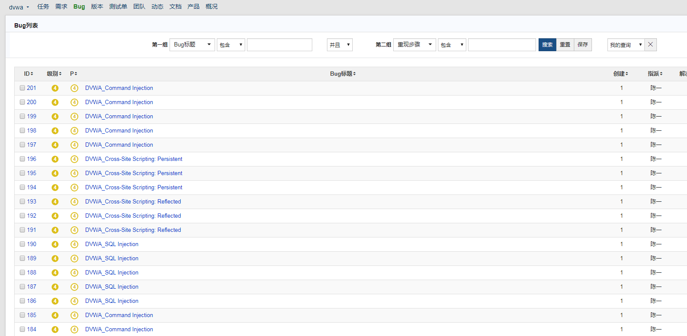

* 本文作者：陌度，本文属FreeBuf原创奖励计划，未经许可禁止转载
纵观甲方的安全体系建设，最开始和最重要的那一部分就是代码安全。甲方公司内部有很多项目，每个项目都由不同的开发人员进行开发，所以项目开发水平也是参差不齐，也就是说有很大可能产生漏洞(SQL注入，XSS，命令执行等)。很多甲方公司公司无法将SDL彻底落地除了DevOps的频繁交付，还有就是安全工程师无法在短时间内对大量项目的源代码进行人工审计。基于上面这个原因，我自己写了一个自动化代码审计的系统，为了让自己能够偷懒，减少工作量，提升工作效率。
该系统是使用python3的django去开发，队列使用celery+redis，最后调用代码审计工具fortify进行审计代码。
源码的地址:https://github.com/yingshang/banruo.git
docker安装，具体可以去查看源码的docker目录
FROM ubuntu:16.04
COPY run.sh /opt/run.sh
COPY sources.list /etc/apt/sources.list
COPY fortify_linux /opt/fortify_linux
ENV DEBIAN_FRONTEND noninteractive
RUN chmod 777 /opt/run.sh
RUN apt-get update -y \
&& apt-get install -y mysql-server mysql-client libmysqlclient-dev --no-install-recommends \
&& apt-get clean \
&& rm -rf /var/lib/apt/lists/* /tmp/* /var/tmp/*
RUN apt-get update -y
RUN apt-get install -y redis-server unzip python3-pip wget vim git libffi-dev libssl-dev libjpeg8-dev zlib1g-dev libxml2-dev libxslt-dev libyaml-cpp-dev
RUN pip3 install django
RUN pip3 install mitmproxy==0.18.2
RUN pip3 install django-celery redis pymysql
RUN pip3 install typing
RUN cd /opt && git clone https://github.com/yingshang/banruo.git
RUN service mysql start && mysql -e "create database banruo DEFAULT CHARSET utf8 COLLATE utf8_general_ci; " && mysql -e "set password for 'root'@'localhost' =password('123456');"
RUN service mysql start && cd /opt/banruo && python3 manage.py makemigrations && python3 manage.py migrate
RUN mkdir /data && mkdir /data/fortify && mkdir /data/fortify/report && chmod 777 /data -R
#这个是fortify的运行程序
#RUN chmod 777 -R /opt/fortify_linux/ && ln -s /opt/fortify_linux/bin/sourceanalyzer /usr/local/bin/sourceanalyzer && ln -s /opt/fortify_linux/bin/ReportGenerator /usr/local/bin/ReportGenerator
EXPOSE 8000
ENTRYPOINT /opt/run.sh
演示的docker，里面有一些测试数据。
docker run -it -p 8000:8000 wushangleon/sc（很奇怪，在最小安装版的centos7启动不起来，但是图形系统又可以启动。可以直接使用Ubuntu启动这个docker）
系统分为下面几个部分:
报告图表我使用echarts进行渲染生成图表，这里面包括周报、月报和年报，图表中有漏洞趋势和高危漏洞占比。
我在设计要怎么拖取项目进行扫描的时候，想过要不要直接调取gitlab或者jenkins的接口，但是感觉这样太麻烦了，还不如干脆直接拉取项目。
①git项目扫描，这个功能只支持对单个项目进行扫描，适合于扫描单个项目的代码。
②git-list扫描，这个功能支持对多个项目批量扫描，我在配置文件设置了两种扫描方案，一种是本地文本文件里面有多个项目的git地址（推荐），一种服务器运行一个接口，通过调取这个接口获取项目的git地址。这里可以去django的后台设置定时计划，我是每天凌晨的时候去跑项目，因为晚上服务器没有人用。
#git-list
http://192.168.1.210:8880/root/dvwa.git
http://192.168.1.210:8880/root/test.git
下面是web-api
③svn扫描，对于这个功能我感觉可有可无，对于中型企业一般都是本地搭建gitlab做版本控制，主要是我没用到SVN= =
④压缩包上传，这个功能只支持单个项目进行扫描，并且只允许上传ZIP文件。
这个功能显示每个项目的名字，漏洞总数，以及扫描的类型，点击项目的序号进入到项目详情查看项目的具体情况，里面包括项目高危漏洞分布的图表和漏洞代码的位置，这样就可以很快定位到漏洞的问题。还有一个重新审计的功能，这个功能不支持压缩类型的重新审计，毕竟你还不如直接上传审计。（对于代码高亮那一部分是借鉴了cobra的代码=-=）
这些漏洞标题、漏洞描述、修复建议是参照fortify报告的描述，但是fortify是英文，我在info.py翻译成中文，我只翻译了严重和高危的漏洞的描述。
对于一个安全老油条来说，甩锅这个技能是必须要学的。由于开发本身就忙于项目的开发进度，肯定没有时间去看你的项目情况（那这些给谁看，肯定给领导看啊= =），所以才需要禅道的存在。因为假如由于这个漏洞出现的安全问题，一追踪发现是开发没有根据禅道的记录去修改，于是就可以杀开发祭天，nice，逃过一劫。但是正确的态度还是要跟开发撕，撕到这个问题被解决。
由于本人不想花时间去研究禅道的接口，干脆直接简单粗暴将漏洞的记录直接写进数据库里面。
对于禅道的功能，我设置了三个功能以完成发送到禅道系统里面进行展示。
①批量隐藏，为什么不是删除呢？因为我是根据漏洞的标题+漏洞的项目+漏洞的文件名+漏洞的处于的行数进行生成一个MD5值，当你删除之后，下一次这个漏洞会再次生成，所以只能将这条记录隐藏。
②过滤漏洞，遍历所有项目，找到新发现的漏洞（数据库没有这个漏洞的记录）并保存在数据库里面。
③发送到禅道。一般过滤漏洞之后，有些问题是误报，作为一个专业的安全工程师，你不可能直接将误报发给开发，让开发嘲笑。这时候就需要使用隐藏功能，将这条误报记录给隐藏下来。最后筛选过后，直接将记录写到禅道的数据库里面。
④邮件系统。这个功能是一个django后台设置定时发送邮件给开发组，告诉他们去认坑。为什么不适用禅道的邮件？因为直接写进数据库是不发送邮件的。
禅道系统的设置：新建一个产品叫安全审计，在项目添加对应的git的项目，添加负责人= =讲真，这一部分要根据自身的业务做一个调整

说一下禅道和我这个系统的链接配置，person_info这个表是保存禅道项目的负责人和项目ID，发送过程的时候获取这些信息加入到SQL中，最后执行这段SQL写入禅道的数据库。
在banruo文件下中config.py是全局的配置文件
禅道系统的测试可以参照这篇文章：https://blog.csdn.net/qq_28039297/article/details/78650552
#fortify的配置路径
fortify_path = "/data/fortify/"
#fortify报告生成的路径
report_path = "/data/fortify/report/"
#GitAPI配置,1为文档，2为web-api
git_username = 'admin@example.com'
git_password = 'abc123456'
git_api_choice = 1
#这个是我自己写的一个测试接口
git_api_adress = "http://127.0.0.1:8000/aduit/api_test"
parm = "gitlab_url"
#方案1接口的路径
git_filepath = "/opt/git-list"
#过滤fortify的高危漏洞到禅道数据表里面
filter_title = ['Injection', 'Cross-Site Scripting']
#发送禅道的设置，不使用禅道的接口，直接写入数据库
openedBy = '1' #创建人ID
product = '3' #项目的ID
MYSQL_HOST = '192.168.1.210'
MYSQL_USER = 'root'
MYSQL_PASSWORD = '123456'
MYSQL_DATABASE = 'zentao'
MYSQL_PORT = 3307
#邮件设置
MAIL_HOST = "smtp.163.com"
MAIL_USER = ""
MAIL_PASSWORD = ""
假如你没有fortify的Linux版，这一切将不存在。。。
* 本文作者：陌度，本文属FreeBuf原创奖励计划，未经许可禁止转载